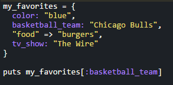
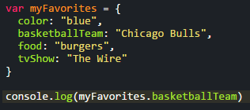

Ruby Hashes vs. JavaScript Objects
The similarities and differences
January 3, 2016
Happy New Year! After weeks of learning the coding language, Ruby, this week we turned our attention to the coding language of the internet, JavaScript! In today's blog post I will assess the two languages that I have come across so far and their elements of a hash(Ruby) and an object(JavaScript).
A hash in Ruby is a like a dictionary or a collection of key-value pairs. This is very similar to a JavaScript object which is also a collection of properties and their name/value pairs. Below are examples of a Ruby Hash and a JavaScript object.
Ruby Hash:
JavaScript Object:
As you can see both are initiated by setting a variable equal to a set of curly brackets containing the key/value pairs. In JavaScript each of the property keys are listed with a colon after their name. Ruby allows for the same method which creates a Ruby symbol or we can use the hash rocket method which can be seen on the "food" key.
The biggest difference is how we call each of the elements within the hash/object. In Ruby we use puts then the method name and the symbol or key string in square brackets. JavaScript is awesome in that we can print the value by typing console.log() and within the parentheses we can call the variable name then a dot and the property or key name. Another big difference is adding elements to a hash/object. In Ruby we can add an element by typing my_favorites[:beer] = "Zombie Dust". In JavaScript we can type myFavorites.beer = "Zombie Dust".
Hopefully this blog post gave you a brief introduction to Ruby hashes and JavaScript objects. Both are very useful tools in their respective languages. Feel free to look more into them in your free time. Thanks for reading and happy coding!